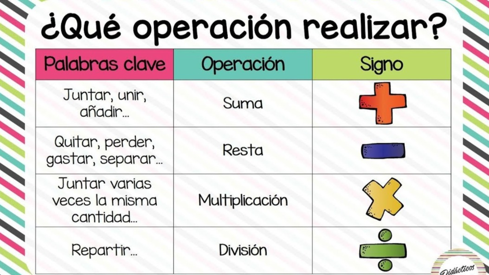

Las operaciones básicas en matemáticas son cuatro: la suma, la resta, la multiplicación y la división. Con estas cuatro operaciones se desarrolla toda la base de las matemáticas, desde las más sencillas a las más complicadas
Es una operación básica que por su forma de análisis, se representa con el signo (+), este sigo combina o une a dos o más cifras numéricas para volverlas una sola entidad. También podemos decir que es la operación matemática de composición, en la que consiste en combinar o añadir dos números o más para obtener una cantidad final o total. Las cifras que se suman se le llaman sumandos, y el resultado final es la suma total.
Es una de las cuatro operaciones básicas de la aritmética; se trata de una operación de descomposición que consiste en, dada cierta cantidad, eliminar una parte de ella. se representa con el signo (-), El resultado se conoce como diferencia o resto.
Es una operación matemática que consiste en sumar un número tantas veces como indica otro número, se representa con el signo (x), En algunos textos encontraremos que una multiplicación es una suma abreviada o es el resultado de una potencia. Sus partes se llaman multiplicando y multiplicador y su resultado final se llama producto.
Es una operación aritmética de descomposición que consiste en averiguar cuántas veces un número (divisor) está contenido en otro número (dividendo), se representa con el signo (÷), El resultado de una división recibe el nombre de cociente. De manera general puede decirse que la división es la operación inversa de la multiplicación.